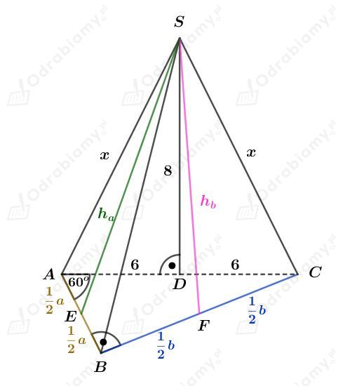

Dany jest sześcian o krawędzi długości 4 cm.
Dany jest graniastosłup prawidłowy czworokątny o krawędzi podstawy długości 2√2 cm i wysokości długości H.
ObjÄ™toÅ›ci tych bryÅ‚ są równe, wiÄ™c zapiszemy:Â
Niech d będzie przekątną tego graniastosłupa.
Korzystając ze wzoru na długość przekątnej prostopadłościanu mamy:
Rysunek:Â
Wyznaczmy tangens kąta𝛼. Mamy:
Rysunek:Â
Ściany boczne są trójkątami równoramiennymi, więc
Wyznaczmy pole powierzchni podstawy. Korzystając ze wzoru na pole trójkąta równobocznego mamy:Â
Wyznaczmy pole powierzchni bocznej tego ostrosÅ‚upa. Mamy:Â
Wyznaczmy pole powierzchni caÅ‚kowitej tego ostrosÅ‚upa. Mamy:Â
Rysunek:Â
Korzystając z twierdzenia Pitagorasa dla trójkąta ABA1 mamy:
Obliczmy pole powierzchni podstawy. Korzystając ze wzoru na pole rombu mamy:
Wyznaczmy objętość tego graniastosłupa. Mamy:
Rysunek:Â
Korzystając z funkcji tangens mamy:Â
Korzystając z twierdzenia Pitagorasa dla trójkąta BCC1 mamy:
Wyznaczmy objÄ™tość tego graniastosÅ‚upa. Mamy:Â
Rysunek:Â
Podstawą tego ostrosÅ‚upa jest szeÅ›ciokąt foremny.Â
Sześciokąt foremny zbudowany jest z sześciu przystających trójkątów równobocznych.
Wyznaczmy pole powierzchni podstawy tego ostrosłupa. Korzystając ze wzoru na pole trójkąta równobocznego mamy:
Z treści zadania wiemy, że pole powierzchni podstawy jest cztery razy mniejsze od pola powierzchni bocznej. Mamy stąd
Wyznaczmy pole jednej ściany bocznej. Mamy:
i mamy stąd:
Zauważmy, że odcinek x to wysokość trójkąta równobocznego. Korzystając ze wzoru na długość wysokości trójkąta równobocznego mamy:
Korzystając z twierdzenia Pitagorasa mamy:
Wyznaczmy objętość tego ostrosłupa. Mamy:
Rysunek:Â
Zauważmy, że trójkąt DOS jest trójkątem prostokątnym równoramiennym. Mamy więc:
Więc również
Odcinek x stanowi 1/3 długości wysokości trójkąta równobocznego o boku długości a. Korzystając ze wzoru na długość wysokości trójkąta równobocznego mamy:
Wyznaczmy pole powierzchni podstawy tego ostrosłupa. Korzystając ze wzoru na pole trójkąta równobocznego mamy:
Wyznaczmy objętość tego ostrosłupa. Mamy:
Rysunek:Â

Punkt D jest spodkiem wysokoÅ›ci tego ostrosÅ‚upa. Skoro punkt D jest Å›rodkiem okrÄ™gu opisanego na trójkącie prostokątnym ABC, to |AD|=|DC|.Â
Korzystając ze związku między długościami boków w trójkącie o kątach 30o, 60o, 90o mamy:
oraz
Korzystając z twierdzenia Pitagorasa dla trójkąta DCS mamy:
Korzystając z twierdzenia Pitagorasa dla trójkąta FCS mamy:
Korzystając z twierdzenia Pitagorasa dla trójkąta AES mamy:
Wyznaczmy pole powierzchni ścian bocznych tego ostrosłupa. Mamy:
Wyznaczmy pole powierzchni bocznej tego ostrosłupa. Mamy: